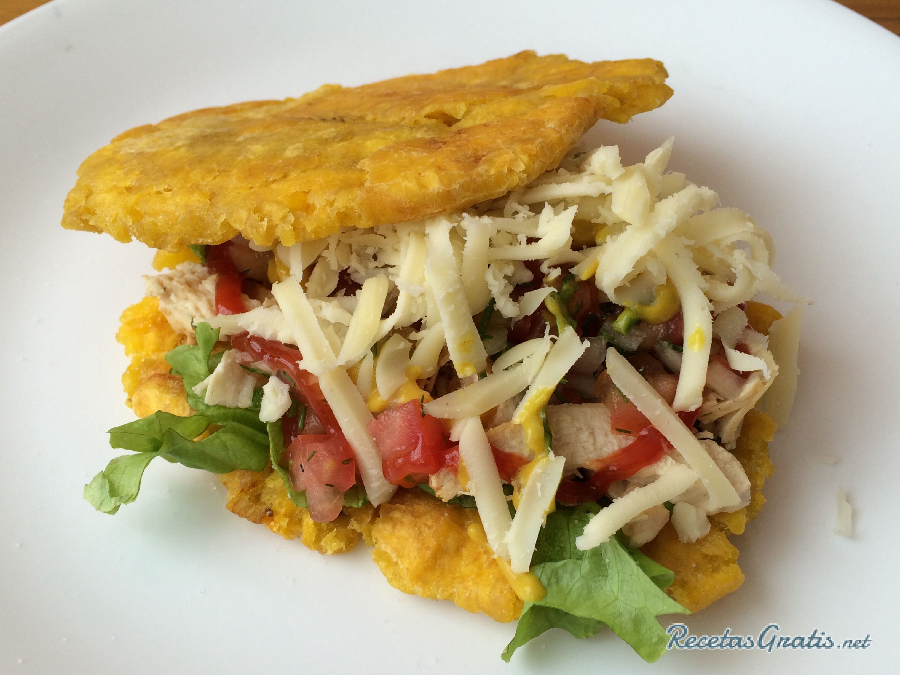

Is a Venezuelan city where early indigenous settlements around the area were of Arawak and Carib origin. Maracaibo’s founding date is disputed. There were failed attempts to found the city—in 1529, by Captain Ambrosio Ehinger, and in 1569, by Captain Alonso Pacheco. Founded in 1574 as Nueva Zamora de la Laguna de Maracaibo by Captain Pedro Maldonado, the city became a transshipment point for inland settlements after Gibraltar, at the head of the lake, had been destroyed by pirates in 1669. It was not until the first decades of the 17th century that the first town was settled. Petroleum was discovered in 1917, leading to a large increase in population from migration.
Patacon
Panoramic view
Maracaibo bridge
Maracaibo bridge at night